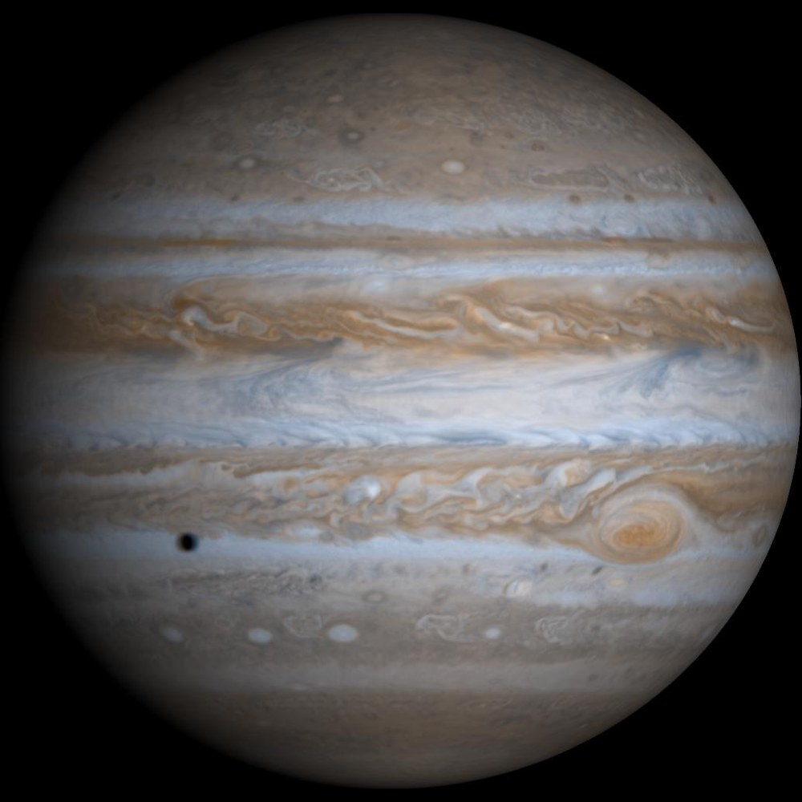

Solar system voyage · Stop 6 of 10
Weather without a shoreline
Cloud bands wrap around a giant world. Follow the storms, then imagine descending into an atmosphere with no solid surface to stand on.
5.2 AU from the Sun · mean distance, rounded
Investigate the sunlight
Spacecraft-inspired view. Images are not a live view; sizes and star positions are not to scale. Select an image to examine it with the class.
Carry sunlight across the solar system
Predict first: move twice as far from the Sun. How much light reaches the same area?
distance from the Sun
sunlight per m², compared with Earth
one-way light travel from the Sun
1 AU ≈ 150 million km. Model: sunlight ∝ 1 / distance²; light takes about 8.32 minutes per AU. These are Sun-to-location values, not Earth-to-spacecraft communication times. Atmospheres, temperature, and orbital eccentricity are not modeled. NASA solar system reference · NASA planetary distance table.
Your mission at Jupiter
Could a spacecraft land on Jupiter as a rover lands on Mars?
Reveal the explanation
There is no solid surface like Mars’s crust. A probe descends into increasingly dense gas and extreme pressure and temperature.
Explain your answer using one observation from the image or lesson and one measurement from the sunlight experiment.
Planet Field Guide · Stop 6 · Gas Giant
Jupiter: King of Planets & Gravitational Sculptor
Containing more than twice the mass of all other solar system planets combined, Jupiter is a giant sphere of hydrogen and helium spinning once every 9.9 hours. Its gravity carved gaps in the asteroid belt, protects inner planets from some comets, and heats the interiors of its largest moons.
Driving question: How does Jupiter’s gravity keep Io volcanically active and Europa’s subsurface ocean liquid—far outside the Sun’s habitable zone?
Interactive Lab · Galilean Resonance
The 4 : 2 : 1 Laplace Resonance & Tidal Heating
For every 1 orbit of Ganymede, Europa completes 2 orbits and Io completes 4. These repeating gravitational alignments tug Io and Europa into slightly oval paths, flexing their rocky and icy interiors like kneading clay—powering volcanoes on Io and a buried ocean on Europa.
Interior Structure
An Ocean of Liquid Metallic Hydrogen
Select each layer to trace how hydrogen gas transforms under crushing pressure deep inside Jupiter.
Atmospheric Dynamics
The Great Red Spot & Giant Magnetosphere
Jupiter's Great Red Spot is an anticyclonic storm wider than Earth that has been spinning for at least 150 years. Decades of telescope and spacecraft images show it slowly shrinking in width while growing taller—fueled by banded jet streams racing in opposite directions.
Spacecraft Exploration
How We Explored Jupiter
- Voyager 1 & 2 (1979): Discovered active sulfur volcanoes on Io, Jupiter’s faint ring, and lightning in cloud belts.
- Galileo (1995–2003): Dropped an atmospheric entry probe into Jupiter and revealed strong evidence for Europa’s buried liquid ocean.
- Juno (2016–present) & Europa Clipper (launched 2024): Juno’s polar orbits mapped Jupiter’s fuzzy core and polar cyclones; Europa Clipper is en route to test Europa’s ocean habitability.
Check Your Understanding
Mission Debrief
1. What generates Jupiter’s colossal magnetic field?
Choose an answer.
2. What keeps Europa’s subsurface ocean from freezing solid at 5.2 AU?
Choose an answer.